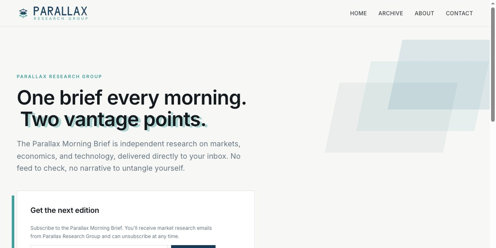

founder · research publication · 2026 – present
Parallax Research

Independent research group publishing a morning brief across markets, economics and technology. I run the technology desk — AI infrastructure, hardware supply chains, and the engineering constraints that decide what actually ships — and keep the site and the archive addressable.